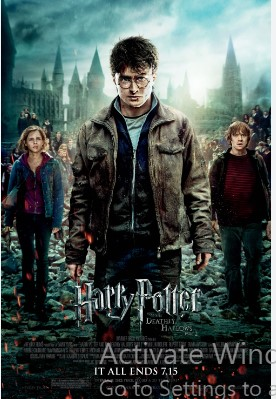
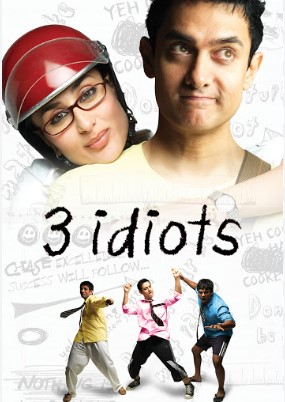
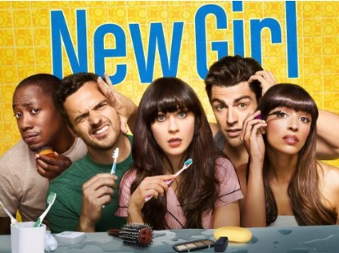
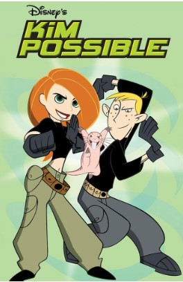

It's thrilling and awesome

It's a classic and never gets old
It's inspirational yet hilarious
I love the character "Schmidt"
A teenage high school girl who is a part time super hero. She spends her days in school, and the rest of the time battling her nemeses.
